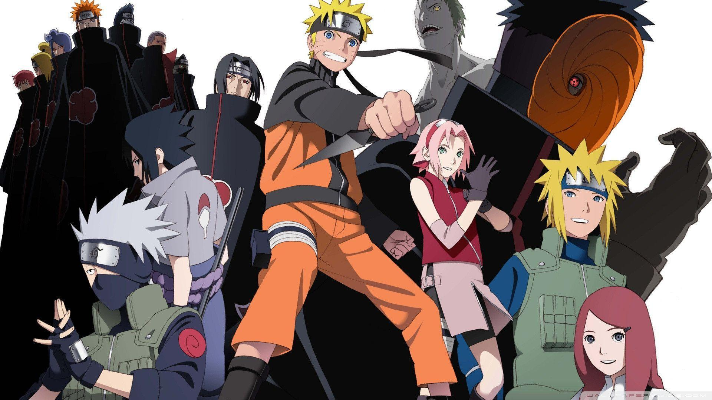

Naruto
2002 - 2017 | Ação, Aventura, Drama, Ninja
Por que está aqui?
Naruto foi o anime que me fez mergulhar de vez nesse universo.
Mais do que batalhas e jutsus incríveis, a história dele fala sobre persistência, amizade, dor e superação.
Acompanhar o crescimento do Naruto me fez crescer também — em cada fase da vida, eu enxergava um novo significado na jornada dele.